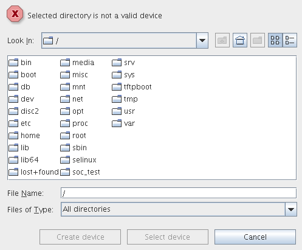

Device Directories
The system stores device-specific setup data in device directories. Each device that you configure on the V93000 has its own device directory.
Each time you use the system, a file called .device_inuse_soc@<hostname> is stored in your home directory. This file remembers which device you were using last, and sets a path to its device directory.
Having started the system software, the system looks for the .device_inuse_soc@<hostname> file. If it is not present in your home directory, or if the device directory is either missing or corrupt, the system displays the Select Device Folder window, where you can select an existing device or create a new device with default settings inside an empty folder.

Functional changes
- Introduced before SmarTest 6.3.2
- SmarTest 7.1.4: Renamed .device_inuse_soc file